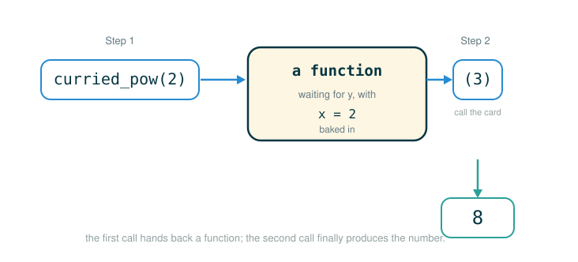

1.6 Higher-Order Functions: Lambda, Currying, First-Class Functions, and Decorators
By now you can write a function, pass numbers into it, and get a value back. This lesson stretches that idea in a direction that surprises most beginners: in Python, a function is itself a value you can move around. You can store a function in a variable, hand it to another function as an argument, and return a brand-new function as a result.
Four tools grow out of that single fact, and this lesson covers all four. Currying rebuilds a two-argument function as a chain of one-argument functions. Lambda expressions let you write a tiny function inline, without a def statement. First-class functions is the name for the property that makes all of this legal. And decorators use a function to wrap another function in extra behavior. The mental habit to build is a single question you will ask over and over: does this name point to a function right now, or to the value that calling the function produced?
Functions Are Values
Python treats functions as values. That means a function can be:
- bound to a name
- passed as an argument
- returned as a value
- stored inside other data structures
This property has a name: Python has first-class functions. The phrase "first-class" means functions are not second-tier objects with special restrictions. They travel through a program exactly the way numbers and strings do.
One helpful picture is a sealed instruction card. The card has steps written on it, but nothing happens while the card is merely being carried around. A function value can be placed in a variable, passed into another function, or returned from a function, and through all of that it just sits there as an unopened card. It only does its work when Python evaluates a call expression — a name followed by parentheses.
square carry the function card around; nothing runs
square(5) open the card and follow its steps on the input 5Higher-order functions live on that distinction. A higher-order function is one that takes a function as an argument or returns a function as a result. It passes the card around first, then calls it at the right moment.
Currying: One Argument at a Time
Some functions take several arguments at once. The built-in pow raises a base to an exponent, and you give it both at the same time:
# (1)
pow(2, 3)
The value is 8, because:
Currying transforms a multi-argument function into a chain of single-argument functions. Instead of supplying both arguments together, you supply them one at a time, and each call hands back a function that is waiting for the next argument.
Think of a two-stage vending machine. The first slot chooses the base. The machine then hands you a smaller machine that already remembers that base. The second slot, on the smaller machine, chooses the exponent. You did not do anything magical; you operated two machines in sequence.
curried_pow(2) choose base 2, get back a new machine
curried_pow(2)(3) feed that new machine the exponent 3Here are those two steps as a picture: the first call hands back a function card, and only the second call turns that card into a number.

This is not a new kind of arithmetic. It is two ordinary function calls placed next to each other.
A Curried Power Function
Here is a curried power function, exactly as it appears in the original text:
# (2)
def curried_pow(x):
def h(y):
return pow(x, y)
return h
The outer function curried_pow takes the base x and does not compute anything with it directly. Instead it defines an inner function h, which takes the exponent y, and returns h. The returned h remembers x because x lives in the enclosing frame. This is the same parent-frame idea from earlier in 1.6; the Step-Through Checkpoint at the end of this lesson draws exactly where x is stored. Follow the structure line by line:
def curried_pow(x):
├─ curried_pow ... the outer function: receives the base x
├─ x ............. the first argument, captured for later
├─ def h(y): .... defines an inner function awaiting the exponent y
├─ pow(x, y) .... h's body: the actual power, once both are known
├─ return h ..... hands back the inner function, not a number
└─ produces ..... a one-argument function that remembers xNow look at what a two-stage call does. In the interactive interpreter:
>>> def curried_pow(x):
def h(y):
return pow(x, y)
return h
>>> curried_pow(2)(3)
8Read curried_pow(2)(3) as two calls written next to each other, and break the line apart:
curried_pow(2)(3)
├─ curried_pow(2) .... first call: returns h, which remembers x -> 2
├─ (3) .............. second call: calls that returned h with y -> 3
├─ inside h .......... runs pow(2, 3)
└─ evaluates to ...... 8The first pair of parentheses is attached to curried_pow. The second pair is attached to the value the first call produced. Python evaluates left to right:
curried_pow(2)(3)
=> h(3) where h remembers x -> 2
=> pow(2, 3)
=> 8If that double-parenthesis line feels strange, cover the second (3) with your hand. Ask, "What does curried_pow(2) return?" Once the answer is "a function," the second call is ordinary.
Calling It in Two Steps
You do not have to write both calls on one line. You can name the intermediate function and call it later, which makes the two stages obvious:
# (3)
two_to_the = curried_pow(2)
result = two_to_the(3)
The first line runs curried_pow(2), which returns h, and binds the name two_to_the to that function. The second line calls two_to_the(3), which runs pow(2, 3).
curried_pow(2) returns h
h remembers x -> 2
two_to_the(3) calls h with y -> 3
pow(2, 3) -> 8So result is 8. Splitting the call into two lines does not change the answer; it only gives a name to the in-between function.
Passing a Curried Function Around
Because curried_pow(2) is itself a function value, you can hand it to another higher-order function. The original text defines a small driver that prints a function applied across a range:
# (4)
def map_to_range(start, end, f):
while start < end:
print(f(start))
start = start + 1
The parameter f is a local name bound to a function. Each loop iteration calls f(start) and prints the result. Now feed it curried_pow(2), which is the function "raise 2 to the given exponent":
>>> def map_to_range(start, end, f):
while start < end:
print(f(start))
start = start + 1
>>> map_to_range(0, 10, curried_pow(2))
1
2
4
8
16
32
64
128
256
512The argument curried_pow(2) is evaluated once, before map_to_range runs, producing the function h that remembers base 2. Inside the loop, f(start) is h(0), then h(1), and so on up through h(9), printing the powers of two from exponent 0 through exponent 9.
A General curry2 Function
Currying a single function by hand is fine, but we can write one higher-order function that curries any two-argument function. Here it is, verbatim, docstring included:
# (5)
def curry2(f):
"""Return a curried version of the given two-argument function."""
def g(x):
def h(y):
return f(x, y)
return h
return g
There are three nested layers, each capturing one more piece of information:
def curry2(f):
├─ curry2 .. receives a two-argument function f
├─ g(x) .... receives the first argument x, returns h
├─ h(y) .... receives the second argument y
├─ f(x, y) . h's body: calls the original f with both arguments
└─ produces a function you call one argument at a timeEach returned layer carries a parent environment that stores what was supplied earlier:
curry2(add) returns g, a function waiting for x
curry2(add)(3) returns h, waiting for y and remembering x -> 3
curry2(add)(3)(2) runs add(3, 2)In the interactive interpreter, build a curried pow and use it. The original text binds the curried function to the name pow_curried:
>>> def curry2(f):
"""Return a curried version of the given two-argument function."""
def g(x):
def h(y):
return f(x, y)
return h
return g
>>> pow_curried = curry2(pow)
>>> pow_curried(2)(5)
32
>>> map_to_range(0, 10, pow_curried(2))
1
2
4
8
16
32
64
128
256
512Trace the single-line call pow_curried(2)(5):
pow_curried is curry2(pow), i.e. the function g
├─ pow_curried(2) first call: returns h, remembering x -> 2
├─ (5) ........... second call: runs the body with y -> 5
├─ inside h ...... runs pow(2, 5)
└─ evaluates to .. 32The last line, map_to_range(0, 10, pow_curried(2)), reuses the same driver from before. pow_curried(2) is the function "raise 2 to the given exponent," so the loop prints powers of two from exponent 0 to 9 — the same output as the hand-written curried_pow(2).
Uncurrying
If currying changes a two-argument function into nested one-argument calls, uncurrying reverses the direction. It takes a curried function and returns one that accepts both arguments at once. Here it is verbatim, docstring included:
# (6)
def uncurry2(g):
"""Return a two-argument version of the given curried function."""
def f(x, y):
return g(x)(y)
return f
The returned f takes x and y together, then internally performs the two-stage curried call g(x)(y):
def uncurry2(g):
├─ uncurry2 .. receives a curried function g
├─ f(x, y) ... receives both arguments at once
├─ g(x)(y) ... performs the curried call: g(x) first, then (y)
├─ return f .. hands back the two-argument function
└─ produces .. a function called like f(2, 5)Used on pow_curried, it recovers the ordinary two-argument calling shape:
>>> def uncurry2(g):
"""Return a two-argument version of the given curried function."""
def f(x, y):
return g(x)(y)
return f
>>> uncurry2(pow_curried)(2, 5)
32Trace uncurry2(pow_curried)(2, 5):
uncurry2(pow_curried)
├─ uncurry2(pow_curried) ... returns f, which remembers g -> pow_curried
├─ (2, 5) .................. calls f with x -> 2 and y -> 5
├─ inside f ................ runs pow_curried(2)(5)
└─ evaluates to ............ 32Uncurrying does not change what "power" means. It only changes the calling shape from two one-argument calls back into one two-argument call.
Lambda Expressions
A lambda expression creates a function without a def statement. It is an expression, so it produces a function value on the spot, which you can use immediately or bind to a name. Here is the original text's example in the interactive interpreter:
>>> s = lambda x: x * x
>>> s
<function <lambda> at 0xf3f490>
>>> s(12)
144Notice two things. Typing s by itself shows that s is a function value — the interpreter prints something like <function <lambda> at 0xf3f490>, and the exact address will differ on your machine. Then s(12) actually calls it and returns 144. The same code as a script:
# (7)
s = lambda x: x * x
Follow the pieces of the lambda expression:
s = lambda x: x * x
├─ lambda ... begins an anonymous function expression
├─ x ........ the parameter
├─ : ........ separates the parameter from the return expression
├─ x * x .... the expression returned when the function is called
├─ s = ...... binds the name s to this function value
└─ produces . a one-argument function equivalent to "square"This is similar in behavior to a def:
# (8)
def square(x):
return x * x
Both create a one-argument function that squares its input. Calling either version on 12 returns 144. The main difference is that lambda is an expression that yields the function value directly, so it fits in places where a small function is needed right away.
The word "anonymous" often attaches to lambda, but do not let it sound mysterious. Anonymous just means the function value is created before it necessarily has a name. In s = lambda x: x * x, the right side creates a nameless function value, and then the assignment gives it the name s:
right side: create a function value (no name yet)
left side: bind the name s to that valueThe colon in a lambda is not the colon in a def header. A def colon begins an indented suite of statements. A lambda colon separates the parameter list from one return expression. That is the hard limit on lambda: the body must be a single expression, never a multi-line block of statements.
Lambda with Higher-Order Functions
Lambda expressions earn their keep when a function is short and used in exactly one place. A classic case is function composition. The original compose1 returns a lambda:
# (9)
def compose1(f, g):
return lambda x: f(g(x))
The function returned by compose1 takes x and returns f(g(x)) — it applies g first, then f to that result. Because the returned function is so small, writing it as a lambda is cleaner than defining a named inner function.
The same idea can be written entirely with lambdas, as the original text shows:
compose1 = lambda f,g: lambda x: f(g(x))Read this from the outside in, in layers:
lambda f,g: receive two functions f and g
lambda x: return a new one-argument function
f(g(x)) when that function is called, apply g first, then fThe double-lambda form is compact, so it helps to see what it produces before calling it on a number. The original text calls compose1 with two lambdas and then applies the result:
# (10)
def compose1(f, g):
return lambda x: f(g(x))
f = compose1(lambda x: x * x, lambda y: y + 1)
result = f(12)
Work the outer call first, then the inner call:
compose1(lambda x: x * x, lambda y: y + 1)
runs with f = (lambda x: x * x) and g = (lambda y: y + 1)
returns a one-argument function that, given x, first adds 1 to x and then squares that result
f(12)
├─ g(12) ......... (lambda y: y + 1) applied to 12 -> 13
├─ f(13) ......... (lambda x: x * x) applied to 13 -> 169
└─ evaluates to .. 169So compose1(lambda x: x * x, lambda y: y + 1) is a function value, and calling it on 12 is the second step that yields 169. This is the function-card idea again: the outer call builds a card that says "when someone gives me x, run g(x), then run f on that result." Nothing happens to a number until that returned card is actually called.
Lambda Is an Expression, Not a Statement
It is worth nailing down the difference in kind. A def statement binds a name as part of executing the statement:
# (11)
def double(x):
return 2 * x
A lambda expression, by contrast, just evaluates to a function value:
# (12)
lambda x: 2 * x
On its own that value is not stored anywhere. If you want to reuse it, bind it to a name like any other value:
# (13)
double = lambda x: 2 * x
The expression after the lambda colon must be a single expression — it cannot contain a multi-line suite of statements, an assignment, or a loop. That is exactly why lambda is best for small functions. When the logic needs several statements, reach for def.
Function Decorators
A decorator is a higher-order function that transforms a function into another function. You hand it a function, and it hands back a replacement — usually one that wraps extra behavior around the original.
A decorator is like placing a receptionist in front of a worker. The worker still does the original job. The receptionist can announce the visit, log it, check something, or adjust the interaction before passing the work along to the original function. Here is a tracing decorator from the original text:
# (14)
def trace(fn):
def wrapped(x):
print('-> ', fn, '(', x, ')')
return fn(x)
return wrapped
The decorator trace receives a function fn and returns a new function wrapped. When wrapped is later called on an argument x, it prints a trace message, then calls the original fn(x) and returns that result. The crucial promise is the final return fn(x): after the bookkeeping, the original computation is preserved, not discarded.
def trace(fn):
├─ trace ...... receives the function fn to be wrapped
├─ wrapped(x) . the replacement function, awaiting an argument x
├─ print(...) . wrapped's extra job: announce the call
├─ fn(x) ...... wrapped still performs the original computation
├─ return fn(x) hands back the original function's result
└─ produces ... a new function that traces, then delegates to fnDecorator Syntax
Python provides shorthand for applying a decorator at definition time, the @ syntax:
# (15)
@trace
def triple(x):
return 3 * x
The @trace line on top of the def means: build triple, then immediately replace the name triple with trace(triple). It is exactly equivalent to defining the function normally and reassigning the name:
# (16)
def triple(x):
return 3 * x
triple = trace(triple)
So @trace is not a separate hidden rule. Read it as a two-step process every time:
1. Build the function written below the decorator line.
2. Replace that name with trace(that_function).After the decorator is applied, the name triple points to the wrapper, not to the original. The original is not deleted — the wrapper remembers it through the name fn in the wrapper's parent environment. Calling the decorated triple now traces and then computes:
>>> @trace
def triple(x):
return 3 * x
>>> triple(12)
-> <function triple at 0x102a39848> ( 12 )
36The first output line is the trace message that wrapped printed. The printed function object shows with a memory address such as 0x102a39848; the exact address is not important and will differ on your machine. The second line, 36, is the value fn(12) returned — that is, 3 * 12. The reassignment is what redirected the name:
before wrapping: triple -> original triple function
after wrapping: triple -> wrapped function returned by traceAbstractions and First-Class Functions
Step back and notice the through-line. Currying, lambdas, and decorators are not three unrelated tricks. They are three uses of one property: functions are first-class values. Currying returns functions from functions. A lambda is a function value written as an expression. A decorator takes a function and returns a function. In every case, the moves that feel exotic — calling the result of a call, returning a lambda, putting @ above a def — reduce to passing function values around and calling them at the right time. The decorator @ syntax in particular is just a higher-order function call plus a reassignment, with no magic underneath.
⚠Common Beginner Traps
| Mistake | What Goes Wrong | Safer Question |
|---|---|---|
Treating curried_pow(2)(3) as one call |
Python calls curried_pow(2) first, then calls the returned function on 3 |
What value does the first pair of parentheses produce? |
Expecting curried_pow(2) to be a number |
It is a function value, so using it like a number, as in curried_pow(2) + 1, raises TypeError: unsupported operand type(s) for +: 'function' and 'int' |
Do I have the function, or the number from calling it a second time? |
Putting statements inside a lambda |
A lambda body must be a single expression; an assignment or extra line raises a SyntaxError |
Does this logic need multiple statements, and therefore def? |
Confusing the lambda colon with the def colon |
The def colon starts an indented suite while the lambda colon separates the parameter list from one return expression; mixing them raises a SyntaxError |
Am I writing one return expression, or a block of statements? |
Forgetting return wrapped in a decorator |
The decorated name is rebound to None, so calling it raises TypeError: 'NoneType' object is not callable |
Which function should replace the original name? |
| Confusing a function value with a function result | First-class functions can be stored without being called | Do I need the function itself, or the value from calling it? |
✓Check Your Understanding
- Given
pow_curried = curry2(pow), what value doespow_curried(3)(2)produce, and what is the function returned bypow_curried(3)waiting for? - Why can
map_to_range(0, 10, pow_curried(2))print the powers of two? - What restriction does a
lambdabody have, and when should you usedefinstead? - In
compose1 = lambda f,g: lambda x: f(g(x)), which function runs first when the returned function is called? - What two steps does
@traceabove adefperform?
Show the answers
pow_curried(3)returns a one-argument function that remembersx -> 3and is waiting for the second argumenty; calling it with(2)runspow(3, 2), sopow_curried(3)(2)produces9.pow_curried(2)returns a one-argument function that maps each exponent to2raised to that exponent, so calling it on0through9insidemap_to_rangeprints1, 2, 4, ..., 512.- The body must be a single expression, not a multi-statement suite. Use
defwhen the logic needs several statements. gruns first, thenfreceives the result, because the body isf(g(x)).- It builds the function written below the decorator line, then rebinds that name to
trace(that_function), the wrapper returned bytrace.
§Summary
In Python, functions are first-class values: they can be bound to names, passed as arguments, returned as results, and stored in data structures. That single property powers everything in this lesson. Currying rebuilds a multi-argument function as a chain of one-argument functions, with each call returning a function that remembers the arguments supplied so far; curry2 and uncurry2 convert between the curried and ordinary shapes. Lambda expressions create small functions as expressions, fitting neatly where a short function is needed inline, with the firm limit that their body is one expression. Decorators wrap a function in extra behavior, and the @ syntax is just a higher-order call plus a reassignment of the name. The central habit is to keep asking, at every step, whether a name points to a function value or to the result of calling it.
▶Step-Through Checkpoint
This program is the lesson's capstone: it defines a curried function, applies the first argument to get an intermediate function, and ends on the interesting second call. Stepping through it draws the environment diagram that makes currying concrete: the curried_pow(2) frame holds x -> 2 and the inner h, and when two_to_the(3) runs, the new h frame holds only y -> 3 while a parent arrow points back to that first frame, showing exactly where the still-live x lives. Before you step through the block below, write down three predictions: how many local frames open over the whole run, whether the name h ever appears in the global frame, and which names get their own binding inside the frame for the final call two_to_the(3).
# (17)
def curried_pow(x):
def h(y):
return pow(x, y)
return h
two_to_the = curried_pow(2)
result = two_to_the(3)
Step through it one line at a time and check each prediction. Two local frames open: one for curried_pow(2), holding x -> 2 and h, and one for the call to h, holding only y -> 3. The name h never reaches the global frame, which collects curried_pow, two_to_the, and result -> 8. The second frame links back to the first, and that parent link is why the final call can still reach x and compute pow(2, 3).